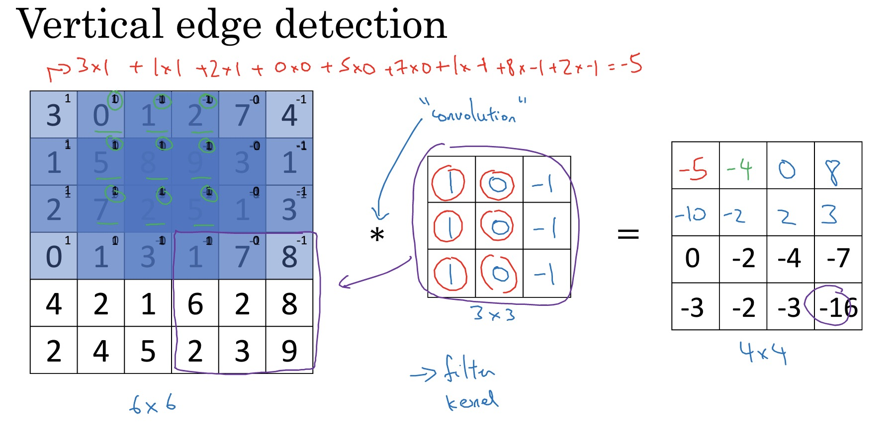

all pictures and knowledges are from this link
- how it works?
eg. edge detection- detect vertical/horizontal edges of an image
use a filter: take the image and convolve it, doing convolution operation. Also, can use different combinations of number to improve the accuracy.(eg. Sobel filter, Scharr filter). Or can just learn them, treat the numbers in the matrix as parameters.

vertical edge detector
- detect vertical/horizontal edges of an image
- padding(add additional border of one or more pixel all around the edges):
drawbacks of convolution without padding:- image will bu smaller after calculate
- pixel at the corner of the edge would be touched only in one output
- strided convolutions:
eg. if stride = 2, move the filter by two steps every time
image (n,n), filter (f, f), padding = p, strie = s
output will be: ((n + 2p - f)/s + 1, (n + 2p - f)/s + 1) - avoid overfitting: no matter how big the picture is, the number of parameters will not change
- types of layer in a convolutional network:
- convolution
- pool
- fully connected
- pooling layer(f and s is fixed and don’t need to be learned, eg. f = 2, s = 2, p is 0 in common, no weight, no parameters):
- max pooling: if a feature is detected, it will remains preserved in output of max pooling
- average pooling: take the average
- fully connected layer:
common pattern: conv - pool - conv - pool - fc - fc - softmax(or something like that) - why convolution is useful?
- parameter sharing: ‘a feature detector(such as a vertical edge detector) that’s useful in one part of the image is probably useful in another part of the image’
- sparsity of connections: ‘in each layer, each output value depends only on a small number of inputs’
- less parameters to avoid overfitting
coding notes
- implement convolution:
- python: conv_forward
- tensorflow: tf.nn.conv2d